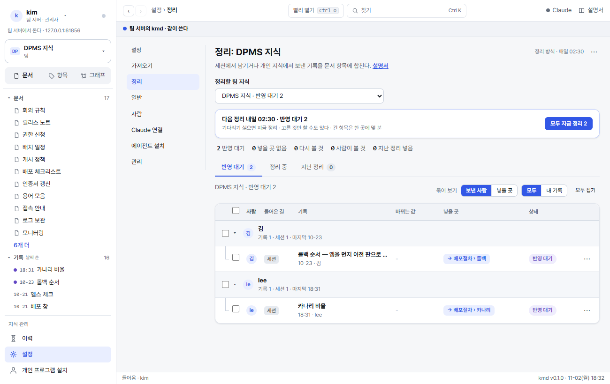
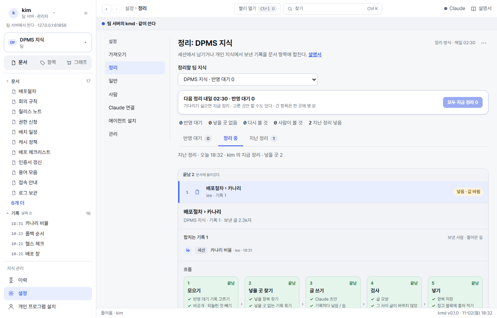
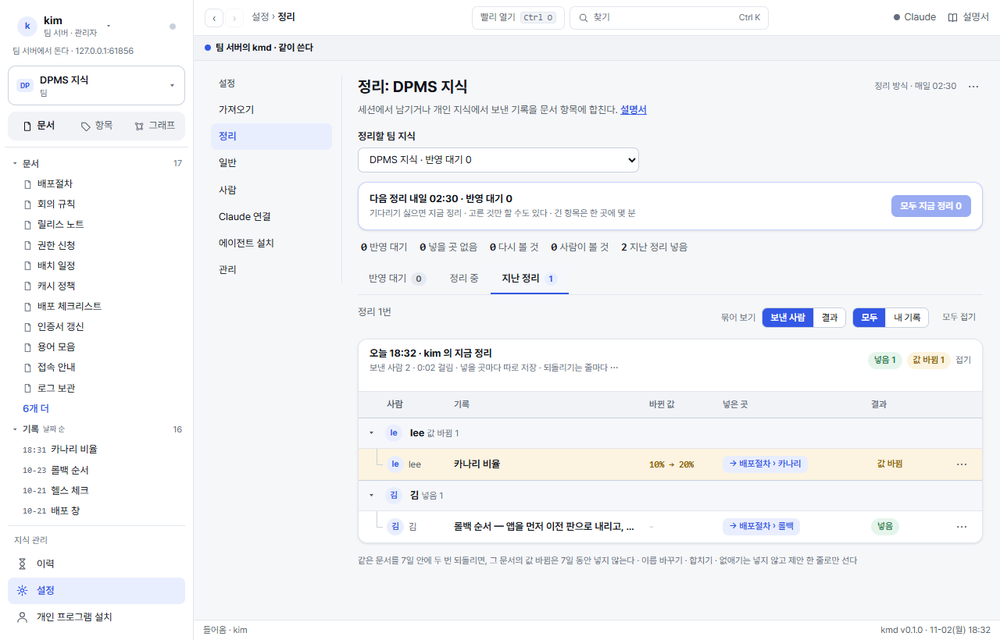
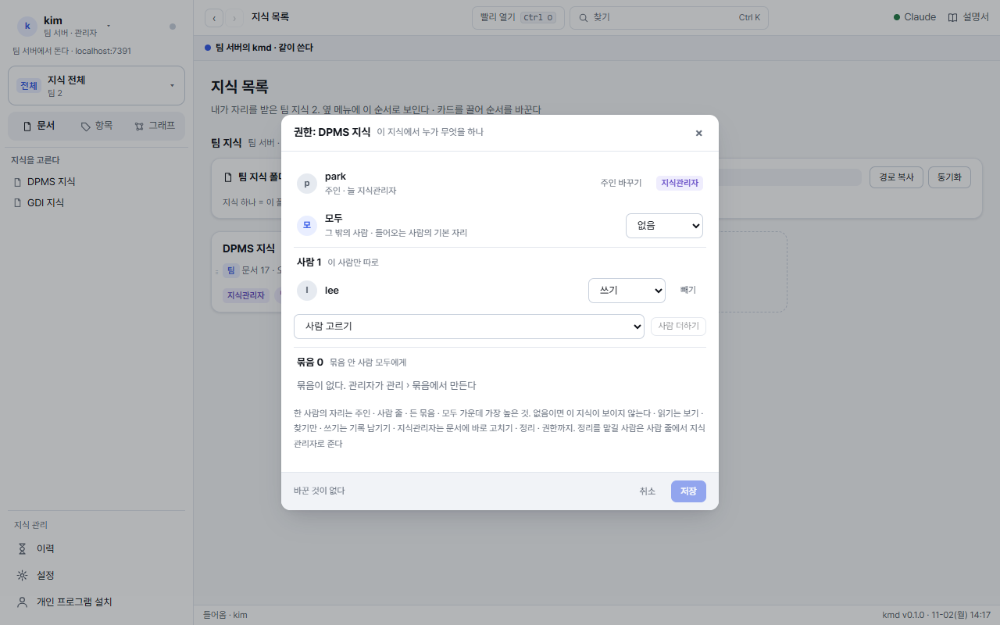
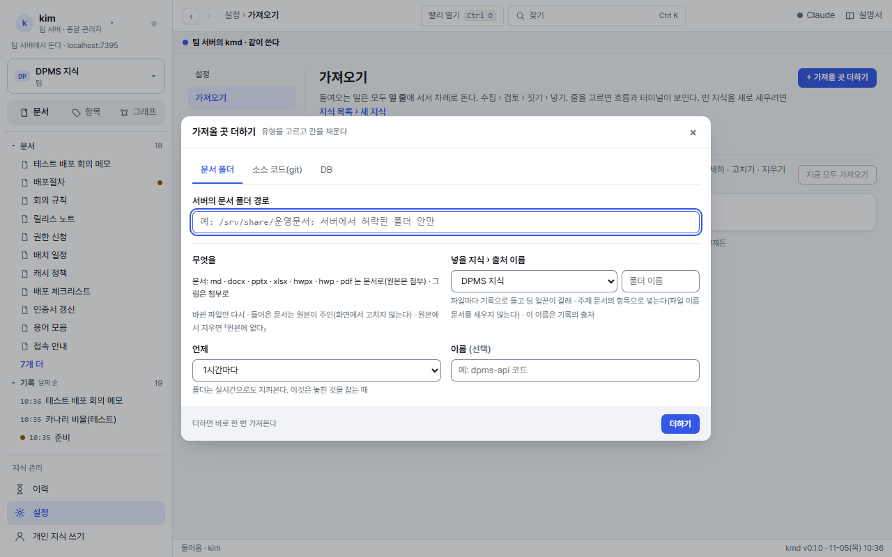

지식관리자
팀 지식 하나를 맡은 사람(주인 포함)이 읽는다. 받은 기록이 문서에 들어가는 정리, 이 지식을 누가 보고 쓰나 하는 권한, 자료를 지켜보며 맞추는 가져올 곳을 다룬다. 지식관리자 자리는 지식마다 받는다(총괄 관리자는 모든 지식의 지식관리자다).
1정리: 기록이 문서가 되는 길
쓰기 자리 사람이 고친 것 · 세션이 남긴 것 · 개인 지식에서 보낸 것 · 넣은 파일은 모두 기록으로 남는다. kmd 는 그 기록을 정해진 때에 문서의 항목에 넣는다. 승인 단계는 없다. 대신 넣기 전에 검사하고, 넣은 뒤에는 줄마다 되돌린다.

- 정리할 팀 지식: 팀 지식이 둘 이상이면 고른다. 이름 옆이 반영 대기 수.
- 다음 정리 · 모두 지금 정리: 정해진 때를 기다리지 않고 지금. 넣을 곳 하나에 몇 분 걸린다(항목 글이 길수록).
- 요약 줄: 반영 대기 · 넣을 곳 없음 · 다시 볼 것(지난 정리에서 둠) · 사람이 볼 것(세 번 둔 기록) · 지난 정리 넣음.
- 반영 대기: 보낸 사람별 · 넣을 곳별로 묶어 본다. 골라서 [고른 N개 지금 정리].
- 제안 있음 n: 세션이 기록과 같이 고친 조각을 보냈다. 값을 더하기만 하는 조각은 저장 때 바로 들어가고, 옛 값을 바꾸거나 지우는 조각은 「확인 대기」 로 남는다. 지식관리자가 그 줄의 [넣기] 를 누르면 지금 글에 대어 넣는다(맞지 않으면 까닭을 알린다).
- ⋯ 정리 방식: 정해진 시각 · 실시간 · 손으로만 · Claude 쓰지 않기.
- 그 지식의 읽기 자리 이상이 정리 화면을 본다. 쓰기 자리는 자기 기록만 고르고 · 지금 정리하고 · 되돌린다. 지식관리자는 남의 기록까지.
- 같은 항목에 모인 기록은 같이 들어간다(항목에 넣으면 그 항목을 기다리던 기록이 모두 「넣음」 이 된다).
- 넣을 곳을 못 찾은 기록은 쓴 사람이나 지식관리자가 [넣을 곳 고르기] 로 항목을 정한다.
- 같은 기록을 세 번 넣지 못하면 자동 정리에서 빼고 지식관리자에게 「사람이 볼 것」 으로 한 번 알린다. 글을 고치거나 넣을 곳을 고른 뒤 [지금 정리] 로 다시 넣는다.
정리 중 · 지난 정리


숫자 · 이름이 기록과 맞지 않거나, 지어낸 값이 있거나, 기록이 바꾸지 않은 옛 글의 값(버전 · 포트 같은)이 빠지면 까닭을 알려 한 번 고쳐 쓰게 하고, 그래도 걸리면 넣지 않고 「그대로 둔 것」 으로 남긴다. 다음 정리 때 다시 본다. 같은 문서를 7일 안에 두 번 되돌리면, 그 문서의 값 바뀜은 7일 동안 넣지 않는다.
2정리 방식 · 정리 때
| 방식 | 언제 문서에 들어가나 | 쓰면 좋은 때 |
|---|---|---|
| 정해진 시각(기본) | 매일 정한 때 한 번(기본 02:30) | 여럿이 같이 쓰는 지식 |
| 실시간 | 기록이 남고 5분 조용해지면 바로 | 한두 사람이 바쁘게 쓰는 지식 |
| 손으로만 | 누가 [지금 정리] 를 누를 때만 | 되살린 지식 · 옮기는 중인 지식 |
자동 정리에 Claude 쓰지 않기를 켜면 정리 일꾼에게 글을 보내지 않고 규칙으로 되는 것만 넣는다(기록 글을 그 항목 끝에 붙인다). 팀원의 Claude Code 대화는 kmd 도구로 여전히 이 지식을 읽는다. 이 설정은 지식 안의 _members.md 에 적혀 백업과 같이 간다.
3권한: 이 지식의 자리

- 실제 자리는 사람 줄과 그 사람이 든 묶음 가운데 높은 것이다.
- 새 사람을 만드는 것은 총괄 관리자다. 지식관리자는 있는 사람 · 묶음에 이 지식의 자리를 준다.
- 주인 넘기기 · 지식 지우기는 총괄 관리자가 한다(지식관리자 혼자 넘기거나 지우지 않게).
- 화면에서 숨기는 것으로 끝나지 않는다. 서버가 모든 길(목록 · 찾기 · 이력 · 알림 · Claude Code)에서 자리로 거른다.
4가져올 곳

| 유형 | 들어오는 것 | 누가 더하나 |
|---|---|---|
| 문서 폴더 | 바뀐 파일만. 파일마다 기록 → 정리가 갈래 · 주제 문서의 항목에 넣는다. 원본에서 지운 파일은 지식을 바꾸지 않는다 | 서버 폴더는 총괄 관리자 |
| 소스 코드(git) | 더한 때의 묶음이 기준. 새 묶음마다 기록 하나(제목은 묶음 설명 · 첫 줄은 바뀐 값 · 차이) | 허락된 호스트(sourceHosts)의 https 는 지식관리자 · ssh 는 총괄 관리자 |
| DB | 테이블마다 정의 표 · 바뀐 테이블만. 이름(table:테이블)을 이름 장부에 세운다. 늘 읽기 전용 · 행은 읽지 않는다 | 허락된 호스트면 지식관리자 |
- 줄을 누르면 자세히: 상태 · 마지막 바뀜 · 주소 · 넣을 지식 › 문서 · 언제 · 자격을 고치고 [고친 것 저장] · [전체 다시 맞추기] · [지우기](들어온 문서는 그대로).
- 쓰기 자리 사람의 [관리자에게 부탁] 은 총괄 관리자의 관리 화면 문제 줄에 선다(같은 부탁은 한 줄로).
저절로 채우는 표
가져올 곳이 채우는 표는 회색 상자로 보이고 사람은 고치지 못한다. 원본(코드 · 파일 · DB)을 고치면 다음 확인 때 바뀐다. 한꺼번에 크게 바뀌면(새 10개 넘게 · 사라짐 10% 넘게) 쓰지 않고 멈춘다. 맞으면 일 줄의 「확인할 것」 에서 [그대로 맞추기], 아니면 [이번은 건너뛰기].
5좋은 지식으로 두기
- 본문에는 확정된 지식만. 아직 반영 안 된 기록 · 초안 · 경위는 넣지 않는다.
- 문서 첫머리 1~3문장 요약 · 항목 하나 300줄 안. 넘으면 대상마다 항목으로 나눈다.
- 항목 이름에 날짜 · 「수정」 · 「추가」 를 넣지 않는다(회의록 같은 사건 문서만 날짜).
- 출처 · 상태 · 내부 표식은 kmd 가 문서 끝 「참고」 에 둔다. 본문에 주석 · 기록 링크를 두지 않는다.
점검이 필요하면 총괄 관리자에게 kmd guard <지식>(이름 없는 기록 · 장부 밖 이름 · 깨진 머리 수)와 kmd search-check <지식>(찾기 점검)를 부탁한다.